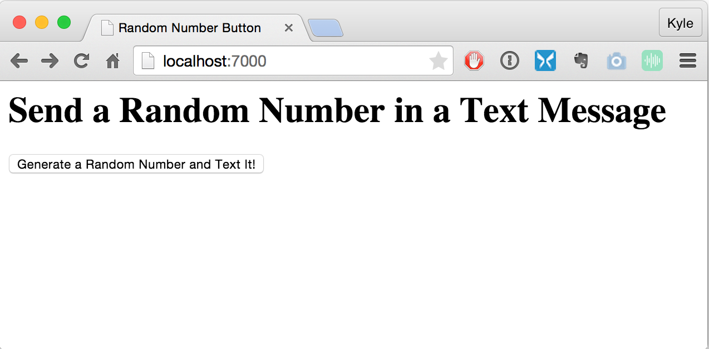
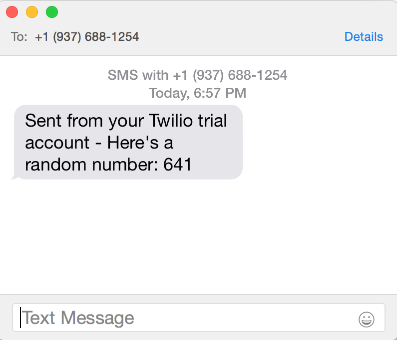

An Intro to Implementing Webhooks in Ruby
With Real Examples, Too!
Who am I?
Kyle Tolle
Software Engineer at Spatial Networks
Implemented webhooks in Fulcrum, our mobile data collection service
First off
Ask questions at any time!
Slides for this talk
Presentation:
http://kyletolle.github.io/ruby_webhooks_intro
Code:
Overview
- How clients use APIs
- Why webhooks are a thing
- Barebones webhooks demo
- Webhooks integration demo
- Other things we can do
- Recapping and wrapping up
Our fictional client
Government Agency for Bear Attacks
Vicious

Relentless

Unexpected
So I’m here
to talk about webhooks
But first
we need some background
Let’s start with
what we know
APIs
Why do we have APIs?
APIs allow
people to get their data
How do APIs work?
The client calls us
Why are they really trying to get their data?
To do things with it!
How do they use the API?
- Call our API
- Frequently
- In a script/application
This is
polling
Polling is straight-forward
But there are some
Downsides
#1
Your client writes the code
How long until
someone murders your servers?
#2
To react faster, they have to poll more
More polling means
more resources
- development time
- support time
- processors
- memory
- bandwidth
#3
It’s mostly useless
Most polls won’t return new data
#4
And it’s still not Real-Time™
Okay
we see the disadvantages
But so what?
We already have an API
- It exsits
- It works
Let’s come back to what’s important
Fast response time
is what’s valuable
&
Polling helps them react quickly
But it’s only one approach
How else can we help them react quickly?
Because, if we can do this…
It’ll make our service more valuable
And that means happier customers
Maybe even some extra revenue
We know that polling is
Client –> Us
But what about the other way around?
Us –> Client
Hmm, this is interesting
Instead of
them calling us
to see if data changes
We let them know
when data has changed
We do this over the web
since it’s common infrastructure
Client gives us a URL
&
We have events we watch for
When an event happens, we make an HTTP POST request to our client’s URL
Boom, Webhooks!
The Benefits
#1
We write the code
#2
Fewer resources required
#3
We send the data just as it changes
This is Real-Time™.
Exciting for integration!
It’s like Push Notifications for the web
We’ve got our background!
How about implementing it?
Let’s see a small example
Show us making a single request
Start small & build momentum
Random Number Generator
require_relative '../lib/webhooks'
class RandomNumberGenerator
include Webhooks
def initialize
self.webhooks = %w{http://localhost:9000}
end
def generate
random_number = SecureRandom.random_number(1000)
send_webhooks(:random_number, :generate, random_number)
return random_number
end
end
The Idea
- Generate a random number
- Send a webhook to our client with that number
We’ll have a client server running, Polis.rb
A small web server which logs POST data
In IRB
require ./examples/random_number_generator.rb'
> puts RandomNumberGenerator.new.generate
=> 863
From the client
We see the webhook request
$ PORT=9000 bf
...
Logging POST request:
...
Body:
{"event":"random_number:generate","data":863}
...
Webhooks module
require 'net/http'
require 'securerandom'
require 'json'
module Webhooks
attr_accessor :webhooks
def send_webhooks(resource, action, data)
event_type = "#{resource}:#{action}"
payload = JSON.generate({
event: event_type,
data: data })
webhooks.each do |webhook|
url = URI.parse(webhook)
Net::HTTP.start(url.host, url.port) do |http|
headers = { 'Content-Type' => 'application/json' }
response = http.post('/', payload, headers)
end
end
end
end
Client code
...
class Polis < Sinatra::Base
...
post '/' do
# Note: Thanks to this SO page: http://stackoverflow.com/a/6318491/249218
http_headers = env.select{|h| h =~ /HTTP_/}
body_string = request.body.read
...
logger.info <<-LOG
Logging POST request:
Headers:
#{http_headers}
Body:
#{body_string}
LOG
status 200
return body_string
end
...
end
We sent our first webhook!
There’s no official spec
It’s a general practice to
Send data to a URL
when something happens
How about another demo?
- push a button on a site
- generate a random number
- send a text message
Random Number Button
Before we push the button

After we push the button

And the text sent

Client code
...
class RandomNumberTexter < Sinatra::Base
...
post '/' do
request.body.rewind
post_body = request.body.read
if request.content_type == 'application/json'
payload = JSON.parse post_body
is_random_number_generate = payload['event'] == 'random_number:generate'
return unless is_random_number_generate
has_payload_data = payload['data']
return unless has_payload_data
random_number = payload['data']
send_text(random_number)
status 201
else
status 202
end
post_body
end
...
end
It still feels like magic

What Can I Do With Them?
Workflows are suddenly much easier
- Post in chatroom when we receive support email
- Continuous integration build after commit is pushed
- Post in chatroom when build fails
- Text employee when they’ve been assigned work
- Reorder products, when inventory drops below threshold
After you see examples
the floodgates of possibility open
Who Uses Them?
Loads of companies!
Zapier
Connects many services together, using webhooks
Clients can integrate with many services
Webhooks Recap
- Communicate events between your server and a client’s using HTTP
- Webhooks accompany an API to enable powerful integrations
- Only real requirement is a web server
- You can do lots of cool stuff with them
Other things to think about
- Use background jobs
- Send requests sequentially
- Persisting requests
- Handle failures
- Performance
Webhooks Docs for Fulcrum
What’s Next?
- Create gem(s) to help others add webhooks to their code
- Would you find this useful?
- Create/extend tools for using, testing, debugging
- Make webhooks easier to debug
- Add scoping to webhooks
Code I Referenced
- Webhooks module, random number generator, random number button site
- Simple webhooks endpoint
- Random number texter